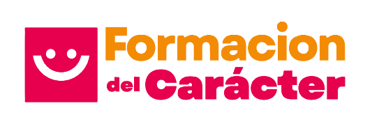

Generador de dilemas morales
Crea situaciones contextualizadas para promover el diálogo socrático, la reflexión, la toma de postura y la autonomía ética.

Colección especializada de GemasRecursos de inteligencia artificial para diseñar experiencias que favorezcan el juicio, la reflexión y la acción en situaciones reales del aula.
Las Gemas se articulan con un horizonte progresivo de virtudes y consideran el momento educativo, el propósito y las características del grupo. La propuesta orienta la práctica sin convertirla en una secuencia rígida.
Cada Gema atiende una intención concreta. Trabaja una solicitud a la vez y conserva siempre la decisión pedagógica.
Crea situaciones contextualizadas para promover el diálogo socrático, la reflexión, la toma de postura y la autonomía ética.
Construye relatos y preguntas de lectura vinculados con las virtudes pertinentes para la etapa y las características del grupo.
Analiza planeaciones, PEMC, recursos, comunicados o estrategias para reconocer fortalezas y priorizar oportunidades de ajuste.
Una propuesta orientadora, no una ruta rígida. La inteligencia artificial acompaña el análisis y la creación; no sustituye el conocimiento, la experiencia ni el criterio profesional de cada docente.
La configuración de estas herramientas parte de fuentes compartidas para conservar lenguaje, definiciones y progresión coherentes con Formación del Carácter Al Estilo Jalisco.
Propósitos, principios y criterios que dan sentido al enfoque.
Referentes pertinentes para cada etapa del trayecto educativo.
Definiciones compartidas para evitar interpretaciones imprecisas.
Articulación intelectual, ética, cívica y de desempeño.